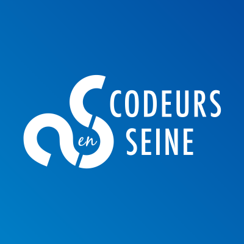

IA locales ou distantes, outils, et un chef d'orchestre nommé n8n
Antonin Brugnot - Onepoint
📅 20 Novembre 2025 - Kindarena, Rouen
🔧 Présentation de n8n
Pourquoi n8n ?
- 🔗 Connecter vos outils du quotidien
- 🎨 Interface visuelle intuitive
- 🚀 No-code/Low-code
- 🔐 Contrôle de vos données
- 💰 Open Source
Selfhosted ou Cloud ?
🏠 Self-hosted
- Contrôle total
- Données privées
- Personnalisation
- Docker/K8s
☁️ Cloud
- Simplicité
- Maintenance incluse
- Scalabilité
- Support officiel
Cas d'usage classiques
- 📧 Automatisation email
- 🔄 Synchronisation de données
- 📊 Rapports automatiques
- 🔔 Notifications intelligentes
- 🛠️ Outils internes
Fonctionnalités clés
- ⚡ Triggers multiples
- 📝 Variables entre étapes
- 🧩 +400 intégrations
- 🚨 Gestion d'erreurs
- 🔒 Credentials sécurisés

🤖 Avec les agents IA
Qu'est-ce qu'un agent IA ?
- 🧠 Modèle IA : Le cerveau (Krang)
- 🤖 Agent : Le corps cyborg qui agit
- 📝 Prompt système : Les instructions de base
- 🛠️ Outils : Les complices (Shredder, Bebop, Rocksteady)
Agent = Modèle + Prompt + Outils

Le cerveau qui orchestre tout ! 🧠
AI Agent Node
- 🧠 Cerveau décisionnel
- 💭 Prompts système
- 🔗 Intégration native
- 📋 Planning de tâches
Node Agent en action

Configuration simple : Agent connecté à Ollama local, sans outils ni mémoire
Model Selector

- 🎯 Adaptation contextuelle
- 🔄 Basculement automatique
- 💡 Optimisation coûts/perf
Ollama local vs distant
🏠 Ollama Local
- 🔒 Données privées
- ⚡ Pas de latence réseau
- 💰 Pas de coût API
- 🖥️ GPU/CPU local
☁️ Modèles distants
- 🚀 Performance optimale
- 🔄 Toujours à jour
- 📈 Scalabilité
- 💳 Pay-per-use
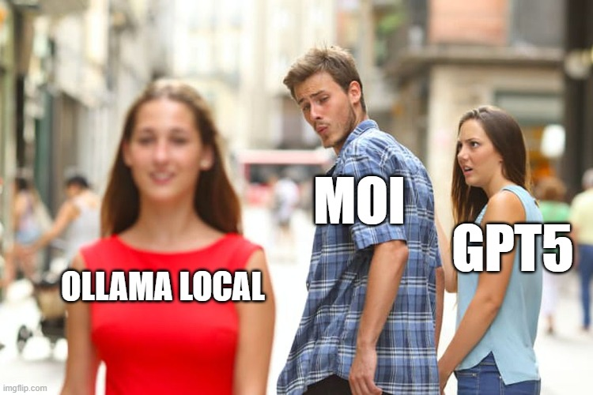
"Tu vas encore passer la soirée avec tes modèles IA locaux ?"
Mémoire
- 🧠 Conversation multi-tours
- 📚 Vector Store (RAG)
- 💾 Variables persistantes
- 🔄 Historique & apprentissage
Outils disponibles
- 🌐 Web & APIs
- 🗂️ Fichiers & Bases de données
- 📧 Communications
- 🤖 Autres agents IA
💡 Via MCP ou intégrations natives n8n
🤖➡️🤖
- 🎯 Spécialisation par domaine
- 📞 Délégation intelligente
- ⚖️ Équilibrage de charge
- 🔄 Résilience & fallback
Exemple d'outils

Interface Chat : Embedded vs Hosted

🏠 Embedded
- Widget intégré
- Votre design
- Contrôle total
☁️ Hosted
- Page dédiée
- Prêt à l'emploi
- Déploiement rapide
Architecture complète
graph TB User[👤 Utilisateur] --> Chat[💬 Interface Chat] Chat --> N8N[🔧 n8n] N8N --> PG[(🗄️ PostgreSQL)] N8N --> Agent[🤖 AI Agent] Agent --> Ollama[🧠 Ollama LLMs locaux] Agent --> Qdrant[🔍 Qdrant Vector DB] Agent --> MCP[🎭 Playwright MCP] Agent --> API[🧠 OpenAI LLMs] subgraph "🐳 Docker Compose Stack" Chat N8N PG Ollama Qdrant MCP Agent end style User fill:#e1f5fe style Chat fill:#f3e5f5 style N8N fill:#e8f5e8 style Agent fill:#fff3e0 style Ollama fill:#fce4ec style API fill:#fce4ec style MCP fill:#fce4ec style Qdrant fill:#f1f8e9 style PG fill:#e3f2fd
🚀 Démo live : n8n sandbox
Docker compose : stack complet
services:
postgres:
image: postgres:15
environment:
POSTGRES_DB: n8n
POSTGRES_USER: n8n
POSTGRES_PASSWORD: n8n
volumes:
- postgres_data:/var/lib/postgresql/data
ports:
- "5432:5432"
n8n:
build: ./n8n
environment:
- DB_TYPE=postgresdb
- DB_POSTGRESDB_HOST=postgres
- DB_POSTGRESDB_PORT=5432
- DB_POSTGRESDB_DATABASE=n8n
- DB_POSTGRESDB_USER=n8n
- DB_POSTGRESDB_PASSWORD=n8n
- N8N_HOST=localhost
- N8N_PORT=5678
- N8N_PROTOCOL=http
ports:
- "5678:5678"
volumes:
- n8n_data:/home/node/.n8n
depends_on:
- postgres
ollama:
image: ollama/ollama:latest
ports:
- "11435:11434"
volumes:
- ollama_data:/root/.ollama
environment:
- OLLAMA_HOST=0.0.0.0:11434
volumes:
postgres_data:
n8n_data:
ollama_data:
🐳 Docker Model Runner
# Version avec Docker Model Runner (Docker Compose)
services:
n8n:
build: ./n8n
ports:
- "5678:5678"
models:
- llm
models:
llm:
model: ollama/llama3.2:3b
environment:
- OLLAMA_HOST=0.0.0.0:11434
ports:
- "11435:11434"
volumes:
- ollama_data:/root/.ollama
runtime: ollama
✨ Avantages
- 🎯 Syntaxe simplifiée
- 🔗 Liaison automatique n8n ↔ modèle
- ⚙️ Configuration centralisée
- 🚀 Déploiement unifié
⚠️ Limitations
- 🐋 Docker Compose uniquement
- 🆕 Fonctionnalité récente
- 📚 Documentation limitée
- 🔧 Fallback classique recommandé
Les workflows
- 📧 Mail.json : Assistant email intelligent
- 🗂️ Indexation.json : Traitement de documents
- 💬 Chat.json : Chatbot
Demo time! 🎬
Démarrage du stack
# Lancement des services
./start.sh
# Configuration d'Ollama local
./setup-ollama.sh
# Import des workflows
./import-n8n-data.sh
🎯 Démo en direct
http://localhost:5678
🙏 Merci à nos sponsors
Codeurs en Seine 2025 ne pourrait exister sans le soutien de nos partenaires
Sponsors Platine & Or
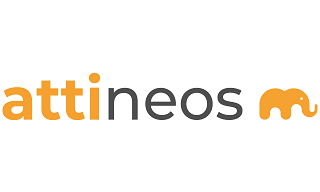
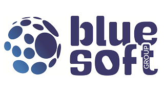
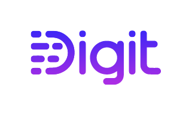
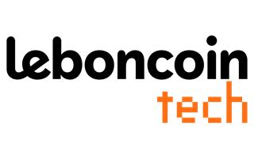
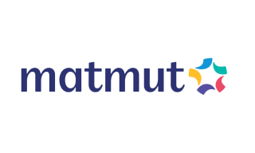
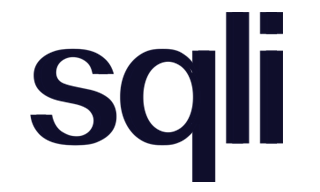
Sponsors Argent & Bronze
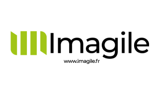
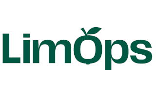
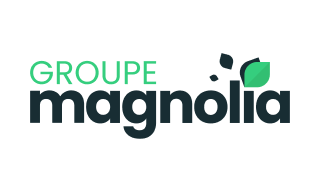
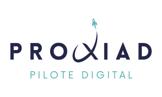
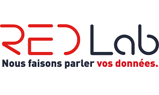
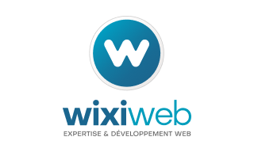
Partenaires Institutionnels & Éducatifs
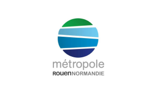
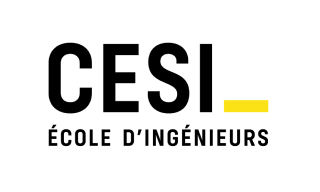
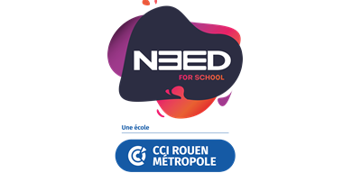
❓ Conclusion et questions
Ce qu'on a vu
- ✅ n8n comme chef d'orchestre
- ✅ Intégration IA locale (Ollama) et distante
- ✅ Agents avec mémoire et outils
- ✅ Protocole MCP pour étendre les capacités
- ✅ Démo concrète avec workflows
Pour aller plus loin
- 🔗 Sources : GitHub avec docker-compose
- 📚 Documentation : n8n.io et ollama.ai
- 🌐 Communauté : Discord n8n et forums
- 🚀 Évolutions : Nouveaux nodes IA en permanence
Questions ? 🤔
Merci pour votre attention !
bio.yaml
Contact & Sources
📧 a.brugnot@groupeonepoint.com
🔗 GitHub : antoninBr/talk-n8n-agent
🏢 Onepoint - Nantes